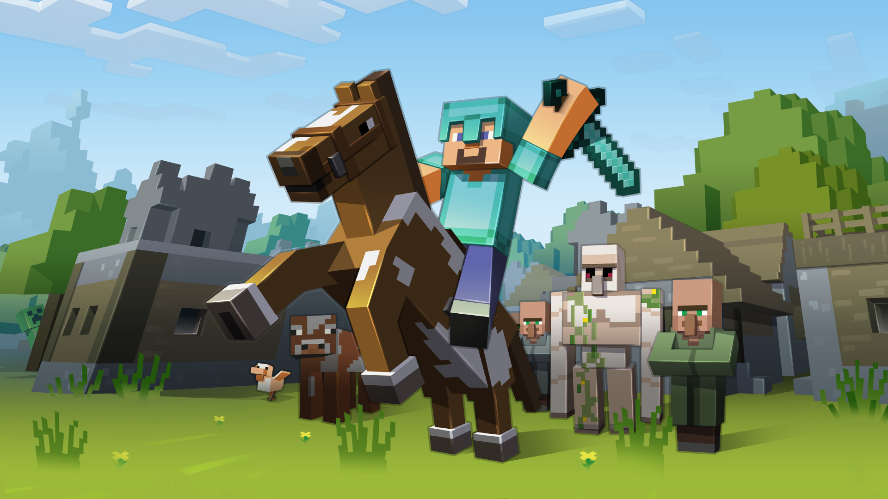
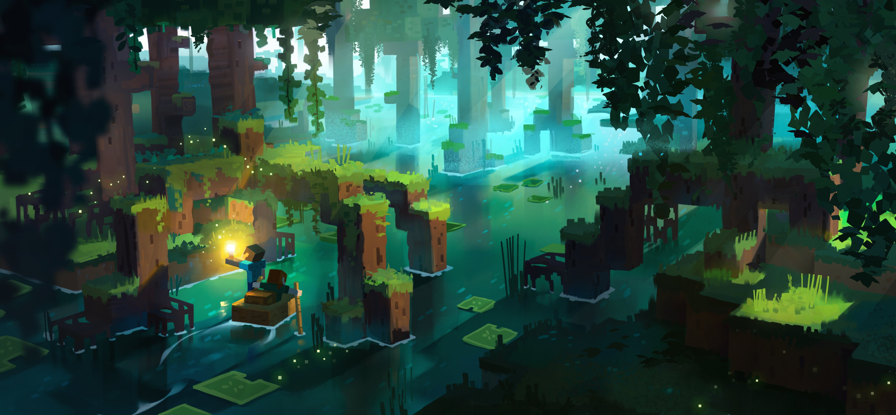

(Actual build done by one of our builders!)
(Calm music while reading!)
What We Are
(Detailed one further down)
We are a group of friends that came together to form a community were everyone can play together, make friends, and enjoy their time!
We do multiple kinds of events but we focus in particular on civilization events, were all players are free to do whatever they want with no gameplay rules!
We do these events on a very popular and unique game, known as Minecraft, were the limits are endless, and imagination ensues!!
.jpg)
What We Deliver
We focus on delivering a unique experience for the players, an opportunity for them to let their creativity roam around freely, were the sky is the only limit!
We also upbring a friendly and respectful community that share the player's passion, creativity and innovation!
We aspire to bring creative and inspirational ideas to life, making something out of nothing, were all creative and enthusiastic minds can share their passion, creativity and inspiration freely, with no judgement!
.jpg)
Why Us
We have simplified and are still trying to simplify the player walkthrough experience even more, we also focus on providing clarity and direction to the player, specially the new ones, I really suggest visiting the FAQ Section, it is found on the top left of the screen, the middle button!
We are very open to feedback, even the complaints and negative ones! We also simplified the feedback experience, not just to tell us, but even if you are facing any technical issues, we got multiple staffs prepared to assist any lost players, also in the time of the event, there will be staff to assist with any issues preventing you to join!
We also try to bring the creative and inspirational ideas to life, as we have and are growing on developer, builder, plug-in, artist, and montage teams (not all teams are in place now, as we are new and still growing, soon enough those teams and much more will be there!) who continue to work hard to make creative dreams a reality!
.jpg)
What We Are Trying To Do
We aspire to make a difference in the Minecraft community, bring creativity and imagination back (revive them), by gathering the creative and innovative minds together, and not just bring creativity and imagination back, but also beat the newfound toxicity in the community, we aim to be the top and best event organization ever, and leave a longlasting legacy to always be remembered by the minecraft community!
We are trying to start a new era in the minecraft timeline, one were minecraft's simplicity, creativity, innovation, imagination, and inspiration was the strongest pillar, and we not just do that for legacy, but to even help people from a far, express themselves, and let their imagination roam around freely, with no limitation, no restrictions (except for the rules stated), and no judgement, so are you ready to feel like a kid again?
We are not the kind that lives in the past trying to re-live the moment by bringing back minecraft's previous glory, but it had the best return and impact on my life and countless others, having a place were you can always express yourself, be creative, innovative, and imagine things, hang out with people, whether it is building, thriving, exploring, adventouring, learning new things, they are all already there! And with the help of mods and add-ons, we can diversify the player experience

The Sanctuary
(Minecraft Events)
"Where Creativity and Innovation ensues!"
(in conclusion) The Sanctuary (minecraft events), is a place were all the creative, and innovative minds come together to express their imagination, release stress, and have fun! we bring back the enthuiasm that is buried deep withing us, from long ago, since our childhood!
We aspire to re-ignite the flame of enthusiasm inside everyone! Minecraft is currently the most suitable place for us to make that dream come true! There, you can strive as far as you want, explore, build, adventure, learn, try, draw, do, and much much more! The limits are endless, there is literally everything!
What we do over that is also provide a friendly community, were you are never judged, not treated badly, and most of all, no toxicity, as there is a lot of toxicity in the minecraft communiuty, we firmly believe we can make a change in the minecraft community, and start a new era, so we try our best to make that happen, and i know at some point, it will happen!
Upload system (for you)
I wont talk about the upload schedule here, but i will talk about the upload system from your point of view, once you finished a civilization event of ours, edited and documented it, you cannot upload the video on any platform or publicly until the main event document video is uploaded on the main channel.
You cannot share your recorded video with anyone online as they can leak clips from it and that will end up putting you in trouble (there will be investigations and you will get caught), so keep it to yourself, and work on editing it if you want, until the main video is uploaded on the main channel. Thank you!
This is done to not kill the hype, and keep in mind that the main video will take its fair share of time before it is uploaded as the montage team will give it their best!
.jpg)
Civilization events
We focus most on civilization events as they bring the most out of everyone, with everything evolving, players making friends, teams, alliances, and ofcourse in-game enemies!
Civilization events were no rules are set, makes players choose their purpose, they can do literally anything! So the possibilities are literally endless! Combine that with having multiple players, and you get a lot of really cool stuff!
Soon enough, we will even add custom maps, builds, mobs, weapons, and much more to enhance the player experience, in all fields, adventure, exploration, discovery, and much much more, all made possible with the help of mods and plug-ins!
A brief summary for "What is the staff ranking system, what are the ranks, and what do they do?" and also redirection to "How to join the staff team and potentially get paid"
.jpg)
Rules
(By Kouraki (Former Discord Server Executive))
------------------------
Server Rules
- 1. Adhere to the correct channels.
- 2. Respect the staff. If they tell you to stop something please do, we want to keep this server fun for all.
- 3. Minimize your language.
- 4. Do not participate in or begin raiding or spamming.
- 5. Art theft or impersonation will be punished.
- 6. Speak only English.
- 7. No NSFW.
- 1. Do not buy in-game items for real money.
- 2. Do not spawn kill.
- 3. Do not hack.
- 4. Listen to the staff.
- 5. No NSFW.
- 6. Have fun!
- 7. No ban evading
- 8. Use Common sense
- The Warning System
- 1 Warning = No mute
- 2 Warnings = 1hr mute
- 3 Warnings = 3hr mute
- 4 Warnings = 6hr mute
- 5 Warnings = Staff will determine whether you should be banned or not. Warnings over 3 months old will not contribute to your 5 warning ban.
their names and descriptions tell you everything you need to know.
We have minors in the server who may not want to hear excessive swearing. Please use your common sense for this but feel free to ask a staff member if something is appropriate to say.
You will receive a verbal warning for light participation and varying levels of official warnings for starting or heavily participating.
If you are caught stealing other's art, builds or creative pieces you will be warned. Same goes for impersonation. Do not attempt to be someone you aren't for in game or personal reasons.
This rule may morph into separate languages as our staff is diverse, but as we are few for now please only speak English.
As previously mentioned we have minors here, any inappropriate action will be scaled from a verbal warning to a ban.
------------------------
In-Game Rules
This is our policy, and while this may be a thing in other servers, we do not allow it.
If a player is newly spawned or killed, do not go after them. This only applies if you see a player spawn in, if they are already walking around you do you.
If you are caught somehow hacking at any point, for anything, it is an immediate ban. Even if you see someone else hacking do not go after them, report the player's user, and leave.
If they ask you to stop or do something for any reason please do.
If any inappropriate action is caught, depending on severity, it may scale from a verbal warning to a ban.
Remember to be kind and enjoy your time in the server.
Ban evasion is prohibited by any means.
The use of loopholes is strictly prohibited.
------------------------

- FAQ -
- Frequently Asked Questions -
When do we host our events?
We host our event occasionally, no more than 4 weeks and no less than 1 week
What kinds of events do you host?
As of now, we focus on civilization events
How long do we play an event for?
As of how it is settled now, the event takes place for a week and a few days, with a 2 hour play time daily, we also sometimes host events on Saturday and Sunday with a 3-4 hours game time!
What are the requirements for me to join an event?
For our current stage, no strict requirements are needed, just confirm you will attend, and that will be it!
Are there any strict rules that limit my accessibility in-game?
There are no such rules that strict player acessibility, however, there are the standard ones like no hacking, cheating, bullying, etc (all rules listed in "What We Are")
Are there any mods I need to install to join, or any specific version?
At our current stage, no, any version, and any launcher except the hacked ones, but as we start adding custom specifications, we will use specific mods and version. I will update it here and in "What We Are" when that happens!
Do you guys follow a script to make content?
We do not follow a script, all players are allowed to do whatever they want freely, with no limitations!
How do I join the discord?
Click on the button on the top right of the screen with a discord icon, or this link: "https://discord.gg/EyrmWbnjPd"
What if I face community issues, like bullying?
There are staff members who moniter the discord server, if they notice such behaviour from anyone, there will be punishment. However, if not noticed, you can report that incident, whether creating a discord ticket and talking with the staff, or calling (pinging) a local staff member. However, in any case, please have any proof (screenshot of the chat) or any witnesses.
What if the event time comes around and I have trouble joining?
There is a handful of staff members dedicated for that situation, who sit back in the discord and help players who face difficulty joining.
How do I pinch my ideas to the organization?
There is a section in the support in discord were you can make a ticket to share your ideas, and we will be glad to hear them out!
How do I share feedback?
There is a section in the support in discord were you can make a ticket to share your experience, with all pros and cons, and feedback is very much apreciated!
Can I record and upload on Youtube or any social platforms my experience?
All experiences cannot be shared anywhere unless the main video of the events is uploaded on the main channel first, all footage recorded during the event would be very apreciated if shared with the staff members so the montage and editing teams have a good foundation of muplitple prespectives to show, to improve our storytelling, and concluding the documentary of the entire event,
How can I share my drawings with everyone?
There is a section in discord, called Fan-arts, you can share your drawings there!
How do I apply to be a staff member?
First off, you have to be trusted, and by this I mean you need to atleast be two-weeks of activity in server, that atleast 2 of the discord moderators notice your presence, second off and more importantly, have a really valuable skillset that can help us, then there will be a section for applying as staff, you will share your skills that can uplift and make a difference, also be considerate that there is competition, and you are not the only person who thought of that role, so you will need to have an edge over anybody else, and in that ticket, describe more about what you want, like what position are you aiming to, etc, also tell us more about yourself, age, where from, hobbies, etc. Your application will be reviewed as soon as possible, and if it is not good enough, you will be informed and the ticket will be closed, if it is good enough, you will have to be interviewed by some high ranking officials, and asked some advanced questions, and if you passed, you will be informed what section you will hold!
Do staff members get paid?
Staff members get paid, but there are certain conditions, as of our begining, only executives (which are the second best rank in the whole staff ranking) will start getting paid, but conditions for them is like conditions for any other.
Disclaimer: Keep in mind that the majority can contribute without getting paid, you can get promoted until you reach monetization zone, and start earning, but for that to happen, you need to be continously learning, growing, and improving, also, time will prove your loyalty and consistency, factors like these will decide your promotion till monetization so you start getting paid, so keep in mind that the majority are possibly not getting paid! So have a growth mindset to stay ahead and possibly get paid!
What are these conditions to get paid?
First off, you need to be so valuable that you are irreplacable at the moment, Second off, you need to continously keep learning, improving and growing, learning from experience (mistakes) and never stopping, Third off, and lastly, you have to treat your part as a business, be innovative and creative, make new things, and dont stop working on improving that area, that is more direct with executives as they hold certain areas, however, staff members can do most of them, but these requirements could possibly be excluded for the staff members
What is the staff ranking system, what are the ranks, and what do they do?
Summary answer in What We Are
How do I negotiate a partnership deal?
Through our tickets! They are explained in "Support" and are found in the discord!
If I join and am very overwhelmed by everything, and all I want is to just join a civilization event, what do I do?
First off as you join the discord server, read the rules, either from the discord or here in "What We Are, then head to "event-announcements" channel on the discord, then see the latest message, it will be an event announcement, check if it is still available or not, if it is still available, follow the requirements under the message to apply, and hopefully you will be picked, chosen ones will have access to the event's channels, and will by notified at a certain time, if the application time ended, then wait for the next announcement, in the meantime, you can chat with other people who share your passion in chat channels like general, media, etc!
Do we do twitch streams, and on what servers?
We certainly do! We do them on servers we partnered with, or other specific ones
What are the advantages of being a Twitch Subscriber, Youtube Member, or Nitro Booster?
During twitch events, subscribers have an advantage and can access the server earlier, thus prioritized during twitch streams!
- Support -
Ticket Types & explaination
Ticket type
Explaination (summarized)
Question (out of FAQ)
If you have a question that isnt answered in FAQ, can be anything regarding the entire event organization
Report Issue
Having an issue in discord, or anything, report it here!
Report Player
If a player is bullying, threatening, swearing, or doing anything inpolite to you, report it but please have evidence like a screenshot or so, it would speed up the searching for conversation, and could potentially be deleted!
Trouble Joining
As the event time rolls in, if you have problem joining, open a ticket here, this type of tickets is prioritized during event time!
Unclarified Issue
If you have an issue that you can describe in short words, but know what it is, say it here!
Feedback
If you have any feedback from your experience with us, please share it with us!
Idea Proposal
If you have any idea you would like to share that can potentially improve a certain area, we would be happy to hear it out!
Partnership
If you would like to discuss partnerships, this ticket would be your best fit!
Staff Aplication
If you would like to apply to become a staff member and possibly be promoted too, it is better explained in "Careers" section!
- Subscriptions -
Youtube Membership Subscription
Bedcoming a member on our Youtube!
Twitch Subscriber
Subscribing to our Twitch!
Nitro booster
Boosting our Discord Server!
What are the advantages of being a Twitch Subscriber, Youtube Member, or Nitro Booster?
During twitch events, subscribers have an advantage and can access the server earlier, thus prioritized during twitch streams!
Privacy Policy for The Sanctuary
Effective Date: 20 / 10 / 2024
1. Introduction
The Sanctuary, we are dedicated to protecting your privacy and ensuring the security of your personal information. This Privacy Policy outlines how we collect, use, and share information when you participate in our Minecraft events and use our website. By engaging with us, you agree to the collection and use of information in accordance with this policy.
2. Information We Collect
We may collect various types of information, including:
- Contact Information:
- Name
- Email address
- Phone number (optional)
- Minecraft username
- Event Participation Data:
- Registration details
- Game ID and in-game achievements
- Feedback and survey responses related to events
- Payment Information:
- Credit card information (processed securely through third-party payment processors)
- Billing address (for verification purposes)
- Usage Data:
- IP address
- Browser type and version
- Pages visited on our website
- Time and date of visits
- Time spent on each page
3. How We Use Your Information
Your information may be used for the following purposes:
- Event Management:
- To register and manage your participation in our Minecraft events.
- To provide updates about event schedules, rules, and any changes.
- Communication:
- To send you important information regarding your registration, including confirmations and reminders.
- To respond to your inquiries and provide customer support.
- Improvement and Personalization:
- To analyze feedback and usage data to improve our events and website experience.
- To personalize your interactions based on your preferences and previous participation.
- Marketing:
- To send you promotional materials about upcoming events, contests, and community news (you may opt out at any time).
4. Information Sharing
We respect your privacy and do not sell or rent your personal information. We may share your information in the following situations:
- Service Providers:
- We may employ third-party companies and individuals to facilitate our events, process payments, and provide services on our behalf. These providers have access to your personal information only to perform specific tasks on our behalf and are obligated to protect it.
- Legal Compliance:
- We may disclose your information if required to do so by law or in response to valid requests by public authorities (e.g., a court or government agency).
- Business Transfers:
- In the event of a merger, acquisition, or asset sale, your personal information may be transferred as part of that business transaction.
5. Cookies and Tracking Technologies
Our website uses cookies and similar tracking technologies to enhance your experience. Cookies are files with small amounts of data that are stored on your device. We use cookies to:
- Understand and analyze website traffic and usage patterns.
- Remember your preferences and settings for future visits.
- Improve site functionality and user experience.
You can control cookie preferences through your browser settings. Please note that disabling cookies may affect the functionality of our website.
6. Data Security
We implement reasonable security measures to protect your personal information from unauthorized access, alteration, or disclosure. These measures include encryption, secure server hosting, and restricted access to personal data. However, please be aware that no method of transmission over the internet or electronic storage is completely secure.
7. Your Rights
You have certain rights regarding your personal information, including:
- Access: You can request a copy of the personal information we hold about you.
- Correction: You have the right to request corrections to any inaccurate or incomplete information.
- Deletion: You can request the deletion of your personal information, subject to our legal obligations to retain certain data.
- Opt-Out: You can opt out of receiving promotional communications at any time by following the unsubscribe instructions provided in those communications.
To exercise these rights, please contact us at TheSanctuaryKilalon@gmail.com.
8. Changes to This Privacy Policy
We may update this Privacy Policy from time to time to reflect changes in our practices or for other operational, legal, or regulatory reasons. We will notify you of any significant changes by posting the revised policy on our website with a new effective date.
9. Contact Us
If you have any questions, concerns, or requests regarding this Privacy Policy or our data practices, please contact us at:
The Sanctuary
TheSanctuaryKilalon@gmail.com
.
Blog
This Section of the page will include Blogs, mainly Blog updates, either the website or major updates, but will mainly be for major updates in the event organization.
Each Blog will showcase the direction we are headed, for example, if we will switch from doing civilization events to any other kind, it will have its own blog post.
19/10/2024
Saturday
(example)
Blog Posts will probably look something like this!
We will hopefully work on an email service that will deliver the update news to you, and other details to increase our formality, any objection with any updates if you see a bad update or so, please inform us in a discord ticket, explained in "Support" as well as any idea proposals or so!
They will be listed above each others here, but hopefully a channel will be created for them soon, updates regarding the website will be included if they are very very major, which could change the way the user accesses our website!
Careers
"Careers" here as in staff positions if you would like to apply, we are not interested in people withj fancy degrees or anything, we are interested in people who have skills that could potentially boost the organization.
Applying is all time open, if you see yourself having skills that can boost areas in the organization you find a gap in, or if you have confidence that you can have a noticable huge impact in a specific area, then go for it!
We usually specify specific positions every one in a while, but if you want to apply generally, then there is a ticket type in discord. Concluded in "Support" but is explained here

If you applied for staff or is already staff, then there is promotions, and if you follow the conditions explained in "What We Are" and "FAQ" regarding staff promotion and payment, you will potentially get paid
Community
Our Community is concluded as in Discord, just discord for now, we could consider it a part of the website too, on discord we make event-related announcements, some updates and everything is mainly focused around the discord, this website will only conclude the major long-term updates, and in a few years, it will include an autobiography of how everything went that while.
We try to keep a respected, polite, and positive community, safe for children, we got a handful of discord chat moderators, monitoring the chat, making sure everything is fine, assisting those who need help, and keeping everything balanced, disobeying the moderators, not listening to them, or causing unnecessary commotion, will result in punishment, punishments are explained in "What We Are" and the same goes for the moderators, misusing thier powers will have very heavy consequences.
Contact Us
There are multiple ways you can contact us, majorly on the discord, however, you can also contact us on this: TheSanctuaryKilalon@gmail.com as a business account, but please keep it on discord for common grounds, the gmail is still acessible, but contact us on this gmail only under very severe circumstances.
The link to our discord is found on the top right of the website!
Partnerships
In this section, the partnership idea will be explained, however, if you would like to discuss a partnership deal, there is a ticket for it on the discord, and its idea is concluded in "Support", please keep in mind that partnerships happen between other minecraft event organizations, with a team, like us!
In the partnerships, please differenciate between partnerships and sponsorships, we wont be doing sponsorships much, if not at all, we do partnerships, in partnerships, we discuss helping each other matters, for simplicity, you can consider it as a trade. You help us, we help you.